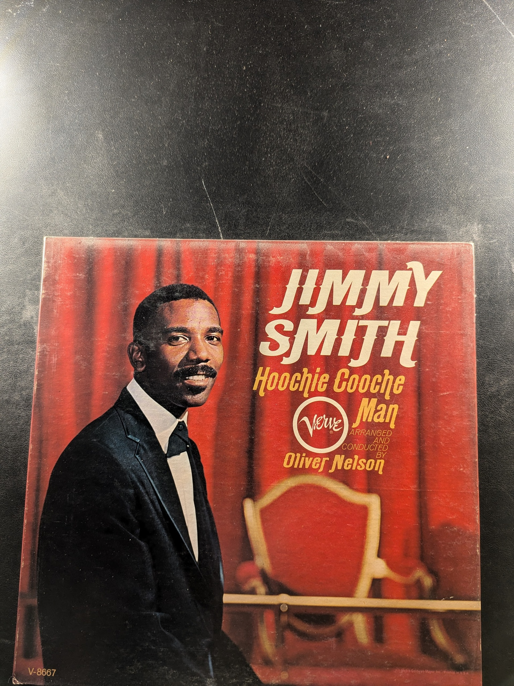
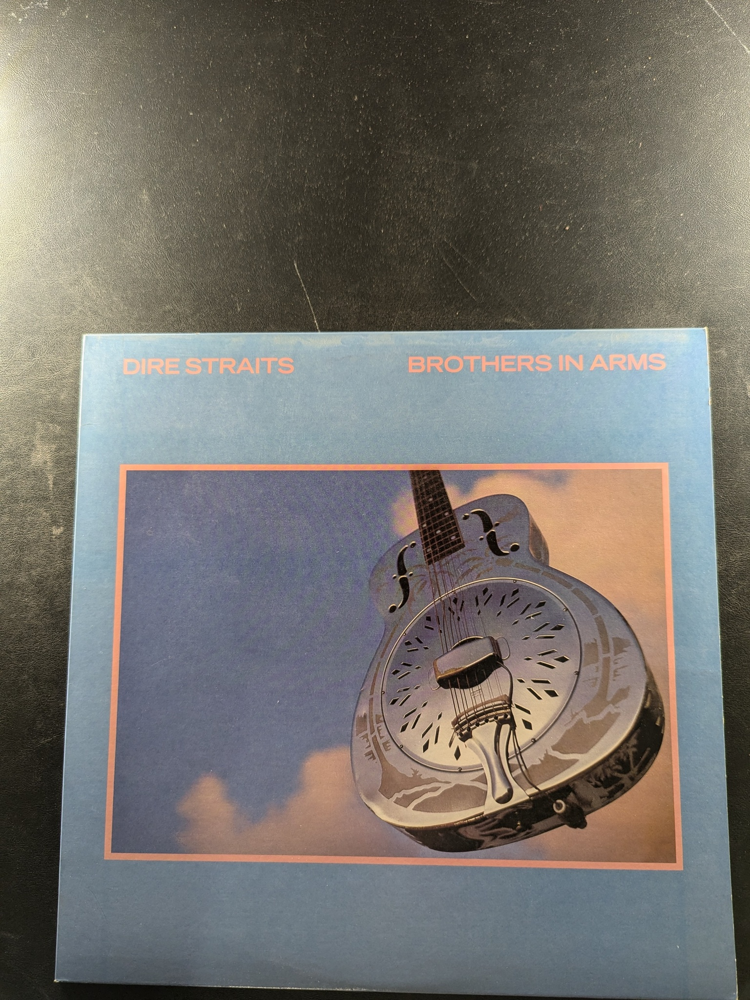

Boil the Breakfast Early
The Chieftains
Original Folk Blues
John Lee Hooker
Kent Records KST-526

The View from Home
Bryan Bowers
Flying Fish FF 407
The Jazz Makers
Django Reinhardt
Swaggie Records
Django 3: Compositions Volume 3
Django Reinhardt / Stephane Grappelli
Here's The Man!!!
Bobby Bland
MCA Records MCA-27030

rockin' at the hops
Chuck Berry
Chess LP 1448
Together For The First Time... Live
B.B. King & Bobby Bland
abc Dunhill
Banjo Reminiscences
Derek Lillywhite
Rounder Records 0094
Hoochie Cooche Man
Jimmy Smith
Verve V-8667
Promenade
Kevin Burke & Micheál Ó Domhnaill
Do the Twist! with Ray Charles
Ray Charles
Atlantic 8054
Bo Diddley
Bo Diddley
Chess LP 1431
Snowflake Breakdown
Randy Zombola

The Times They Are A-Changin'
Bob Dylan
Columbia CL 2105
Bob Dylan's Greatest Hits
Bob Dylan
Columbia KCS 9463
Moving
Peter, Paul and Mary
Warner Bros. Records WS 1473
The First 10 Years
Joan Baez
Vanguard VSD-6560
Sixteen Immortal Performances Gypsy Flamenco
Montoya
Brothers in Arms
Dire Straits

The Joy of Christmas
Leonard Bernstein, New York Philharmonic, The Mormon Tabernacle Choir
Columbia MS 6459
Piano Rags by Scott Joplin
Joshua Rifkin
Nonesuch H-71248
Piano Rags by Scott Joplin Volume III
Joshua Rifkin
Nonesuch H-71333
Piano Concertos No. 17, G Major, K. 453 / No. 21, C Major, K. 467
Mozart
Deutsche Grammophon 138 783
quartets, op. 55 (complete)
Allegri Quartet
Westminster
{kind=link}
{kind=link}
{kind=link}
{kind=link}
{kind=link}
{kind=link}
{kind=link}
{kind=link}
{kind=link}
{kind=link}
{kind=link}
{kind=link}
{kind=link}
{kind=link}
{kind=link}
{kind=link}
{kind=link}
{kind=link}
{kind=link}
{kind=link}
{kind=link}